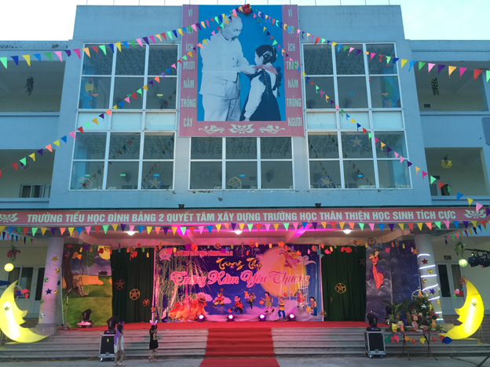
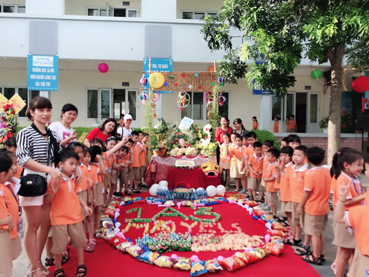
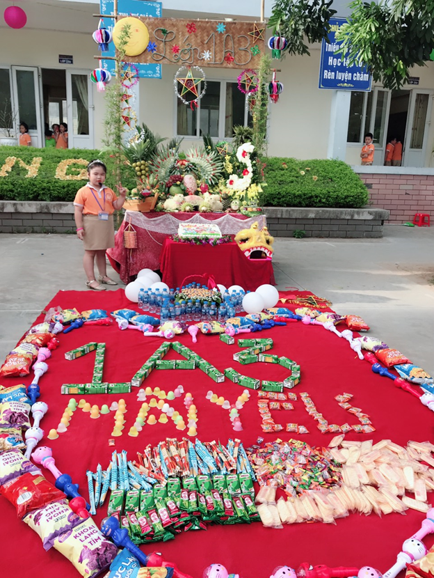
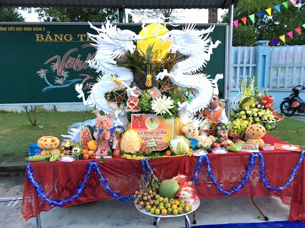
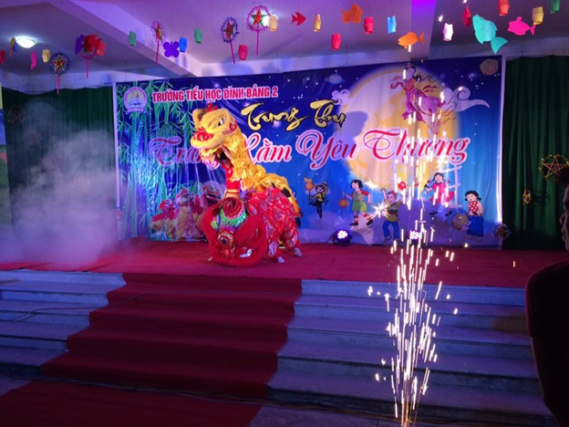

TẾT TRUNG THU TRONG EM CÙNG TIỂU HỌC ĐÌNH BẢNG 2
Theo phong tục người Việt chúng ta, Tết Trung Thu được tổ chức vào giữa mùa thu, tức là hôm rằm tháng tám ta.
Trong dịp này người ta làm cỗ cúng gia tiên và bày bánh trái ra sân cùng trông trăng và đón trăng. Nhân dịp tết này, người lớn thì uống rượu, thưởng trăng, hát trống quân; trẻ em thì rước đèn, đi xem múa lân, ca hát các bài hát Trung Thu, và vui hưởng bánh kẹo cùng các thứ trái cây do cha mẹ bày ở ngoài sân trong đêm Trung Thu dưới hình thức một mâm cỗ. Theo tục lệ, việc trẻ con thưởng thức bánh kẹo trái cây trong đêm Trung Thu này được gọi là "phá cỗ."
Tết Trung Thu là một ngày có ý nghĩa vô cùng đặc biệt với Thiếu nhi Việt Nam. Đến ngày hội trăng rằm hàng năm, các em háo hức được rước đèn, được phá cỗ, được nghe lại truyền thuyết về Chị Hằng và Chú Cuội trên cung trăng. Đối với các bạn học sinh trường Tiểu học Đình Bảng 2 cũng vậy, Tết Trung Thu luôn là một ngày hội tràn đầy niềm vui và những kỉ niệm đáng nhớ bên thầy cô, bạn bè và mái trường thân yêu. Tết Trung Thu đã đi qua nhưng những cảm xúc về ngày “ Đêm hội trăng rằm” vẫn đong đầy vẹn nguyên trong tâm trí các em.
Trường Tiểu học Đình Bảng 2 đã tổ chức cho các học sinh một ngày hội trăng rằm với nhiều hoạt động vui chơi hấp dẫn, bổ ích mà vẫn đậm đà truyền thống văn hóa dân tộc. Đây là cơ hội để các con thêm đoàn kết, cùng nhau chia sẻ cảm xúc, để các con hiểu thêm về truyền thống dân tộc qua những phong tục lễ tết. Các bạn học sinh còn được bày mâm ngũ quả, được trang trí khung cảnh sư phạm.
Cảm ơn mái trường Tiểu học Đình Bảng 2 đã trở thành ngôi nhà thứ hai giúp các em không chỉ được thỏa sức sáng tạo mà còn trở thành những học sinh tài năng, giàu lòng nhân ái.




